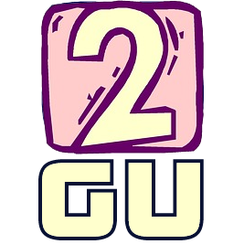
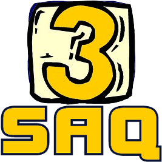
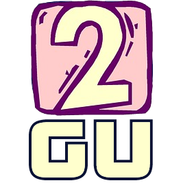
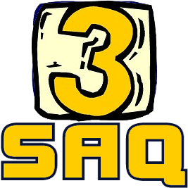
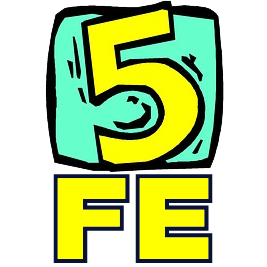
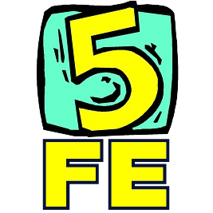
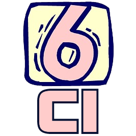
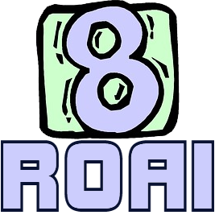
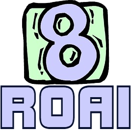

Credit
This is an adaptation of this Lojban guide by ldlework.
Introduction
This is a distilled overview of the Toaq language.
Major concepts of the language are introduced by saying as much with as little as possible.
That is to say:
For each concept the most crucial aspects are presented. However, some details may be glossed over or simplified. Some details are only mentioned or explained by their mere appearance in example sentences. Look carefully!
Finally, some aspects of Toaq are omitted entirely!
However incomplete - the goal of the following is to present, in the most immediate and expedient manner possible, a conceptualization of the language. This text aims to reveal that Toaq is both rational (it makes sense) and regular (it always works the same).
From this rationality and regularity comes a simplicity that makes Toaq easier to learn than anyone really ever expects it to be at first.
Tip:
| If you take the following passages at reading speed you will likely find yourself lost in the forest very quickly. The slower you go, the better luck you'll have at absorbing what it is trying to tell you. |
| In the end, if you're confused, use that as inspiration to dig deeper and you'll be fine! |
By the way, there are going to be a lot of such "cards" in this guide. In fact, that's why it's called Kátā "card(s)". Each new concept is conveyed using only as much information as could fit on a small note card. You will be getting to know Toaq "card by card", as you will.
It is recommended that you familiarize yourself with the pro-nunciation of the letters before trying to read the examples in this guide in order to avoid creating incorrect associations between the letters and the sounds.
Click here for an interactive keyboard of Toaq letters and sounds.
If, at any point, you need to look something up, here are two dictionaries:
✔ Official dictionary
✔ Community dictionary with search function
Once you are ready, proceed.
Chapter 1
Parts of Language
In Language there are three major parts:
| nouns: the things we talk about |
| verbs: tell us what the nouns do |
| sentences: say something using nouns and verbs |
Types of Words
Toaq only has two kinds of words:
| particles: short words that perform grammar functions |
| verbs: tell us what nouns do |
What about Nouns?
What about Nouns?
| Hold that thought. |
Standard Form
Every sentence follows the form:
| VERB ___ ___ ... da |
da marks the end of a sentence. The verb comes first in a sentence, then follow the nouns.
Verbs Say What Nouns Do
Verbs tell us what the nouns do:
| maı: ___ loves ___ |
To use a word as a verb in a sentence, it must carry the tone  :
:
|
|
Simple Pronouns
Here are two simple pronouns:
| jí: me, the speaker |
| súq: you, the listener |
Verbs and Nouns
Nouns can be put in the places and the verb says what they do:
|
| "I love you." |
Rearranging Nouns
Putting the nouns into different places changes what they do:
|
| "You love me." |
Converting Verbs to Nouns
The tone  converts verbs to nouns from the first noun slot:
converts verbs to nouns from the first noun slot:
|
núo creates a noun description which refers to a "sleeper". A natural-sounding English translation would be "the one who sleeps".
|
| "I love the one who sleeps." "I love the sleeper." |
Complex Sentences
Using multiple verbs, complex sentences can be formed:
| pıe: ___ drinks ___ |
| poq: ___ is a person |
| nao: ___ is water |
|
| "The person drinks the water." |
The Drama of Language
The previous example can be thought of as a kind of stage-play, directed by the Verb and starring the Nouns.
| Break Time, a play by Pıe. |
The Verb Director tells us what Roles are available and What Happens:
| Pıe says, "___ drinks beverage ___". |
| Story Outline: pỉe [drinker] [beverage] |
|
|
|
| "The person drinks the water." |
Chapter 2
Multiple Sentences
Let's recall the general pattern of sentences:
| VERB ___ ___ ... da |
So far, we have omitted the final da from our examples. The purpose of this da is twofold. Its main purpose is this:
| da: marks a sentence as being an assertion |
Additionally, da serves as a sentence boundary. When you see da, you can be certain that the sentence is over and that any following words belong to the next sentence.
Thus, text follows this form:
| SENTENCE da SENTENCE da SENTENCE da ... |
For example:
| Mảı súq jí da. Chỏ jí fúaq da. Nủo póq da. |
| "You love me. I like the picture. The person sleeps." |
Serial Predicates
Individual verbs can be chained together to form so-called serial verbs as a means to create more interesting and more expressive verbs.
| Pattern: VERB + VERB = SERIAL VERB |
Here are two example verbs, which we will use for our very first serial verb:
| jaq: ___ is very ___ |
| de: ___ beautiful |
By chaining these verbs, we get:
| jảq dẻ ___ is very beautiful |
For example:
| Jảq dẻ súq da. |
| "You are very beautiful." |
Let's make another serial verb with these verbs:
| leo: ___ tries to do ___ |
| pıe: ___ drinks ___ |
| Lẻo pỉe súq cháı da. |
| "I try to drink the tea." |
Serial verbs are a powerful tool. They can contain an arbitrary number of verbs, though we won't get into that much detail yet.
Also note that serial verbs are verbs and therefore can be turned into nouns. To do so, only the first verb gets the tone, the remaining verbs retain their tone.
| léo nủo |
| "the one who tries to sleep" |
Proper Nouns
Proper nouns are created by using the particle mı in front of a name (the name can carry any tone, though usually it will carry a tone).
| Pattern: mı + NAME = VERB |
Since the result is a verb, we get a place structure and we have to use the appropriate tone on mı depending on the function we want it to fulfill.
| mı Lỉ : ___ is someone named Lee |
To use this as the verb of a sentence, we use the tone, as usual:
| Mỉ Lỉ jí da. |
| "My name is Lee." "I'm Lee." |
To use this as a noun, we use the tone:
| mí Lỉ |
| "Lee" |
| Chỏ mí Sảrā rúa da. |
| "Sarah likes the flower." |
Greetings
Greeting another person is done with the verb hıo and the particle ka.
| hıo : ___ greets ___ |
The particle ka is actually in the same class as the familiar da. ka also marks the end of a sentence, but instead of marking the sentence as an assertion, it marks it as a so-called performative. A sentence with ka is true by virtue of being uttered. Think of a marriage officiant saying the words "I now pronounce you husband and wife". The officiant is not merely asserting that they are pronouncing it. Instead, the very act of saying the sentence is itself what fulfills the ceremony. A good way to translate ka is "hereby".
| Pattern: SENTENCE ka "Hereby SENTENCE" |
Combining the two, we arrive at the Toaq greeting:
| Hỉo jí súq ka. |
| "I hereby greet you." "Hello"/"Goodbye" |
The greeting is often shortened to a mere Hỉo ka, "I hereby greet", which is just as understandable.
Addressing Someone
If multiple listeners are paying attention, you can address them individually with the particle hu.
| Pattern: hu NOUN addresses NOUN |
| Kủaı chủq jí hu mí Jẻımī da. |
| "I am hungry for food, Jamie." |
Yes-No Questions
Yes-No questions can be asked by using the particles mả and moq.
| Pattern: mả SENTENCE moq |
The particle moq is in the same class of words as da and ka. It marks a sentence as being a question and is always used when a sentence is a question, no matter the type, be it a yes-no question or a wh-question.
The particle mả is placed at the beginning of a sentence and indicates a yes-no question. It can be translated as "whether".
| Mả nủo súq moq. |
| "Are you sleeping?" |
Yes-No Answers
"Yes" and "No" answers can be supplied with the following replies:
| In the affirmative, Hỏq da is used: Q: Mả chỏ súq rúa moq. "Do you like the flowers?" A: Hỏq da. "Yes." |
| The denial is supplied by Bủ hỏq da: Q: Mả chỏ súq rúa moq. "Do you like the flowers?" A: Bủ hỏq da. "No." |
Wh-Questions
Who, what, where, when, why? These are wh-questions. In Toaq, these are all based on "which". "who" is "which person", "where" is "at which place", "when" is "at which time", "why" is "for which reason".
"What" asks what goes in a given noun slot. This is done using the expression hı ráı, literally "which thing".
| Chủq súq hı ráı moq. - "What are you eating?" |
| Nỉe hı ráı ní moq. - "What is inside of this?" |
To answer such a question, simply state what fills the missing place:
| shámū "the apple" |
Or restate the question with the asked-about place(s) filled in:
| Nỉe sa rúa ní da. - "There is a flower inside of this." |
Commands
To make a command, replace da with ba.
| Pattern: SENTENCE ba = COMMAND |
| Sỏa súq jí ba. - "Help me!" "May you help me." |
Commands with ba are not impolite. They are completely neutral on the politeness scale.
ba is very flexible and not at all limited to requesting things from other people:
| Jẻaq lẻo jí ba. - "I should try harder!" |
Sentence Starters
In addition to words like da, which have among their functions the marking of the right boundary of a sentence, there are also words that mark the left boundary of a sentence, the so-called sentence starters. They are useful for structuring text. The most important member is keo "but".
| Pattern: Keo SENTENCE "But SENTENCE" |
| Bủ chỏ jí rúa da. Keo chỏ jí súq da. - "I don't like the flower, but I like you." |
Chapter 3
Compound verbs - The  tone
tone
Words are not limited in length to a single syllable. When multiple syllables are joined to form a longer word, we speak of compound verbs. Often, these verbs are the result of joining two monosyllabic roots together to form a new emergent concept. An example of this would be chıejīo "school", from chıe "learn" and jıo "building".
In order to indicate that the glued-on syllable belongs to the same word, it carries the tone.
| Pattern: SYLLABLE + [ SYLLABLE + ] = COMPOUND VERB |
The first syllable gets the tone that decides what part of speech the word will act as in a sentence. The following syllable always keeps its tone.
| Shảmū ní da. "This is an apple." |
| Chủq jí shámū da. "I eat the apple." |
Saying "and" and "or"
To make statements about different nouns at the same time the conjunction particle ru can be used:
| Pattern: NOUN ru NOUN => NOUN' |
| Chỏ jí [[shámū] ru [písō]] "I like the apples and the pears." |
Similarly, ra can be used for "or":
| Kỏe súq [[shámū] ra [písō]] ba! "Pick the apple or the pear (or both)." |
Me and you together
To group multiple nouns together to say that they do something together, roi can be used:
| Pattern: NOUN roi NOUN => NOUN' |
| Chẻo mảı súq roi jí da. "You & I love each other." |
| Gủ súq roi jí da. "You & I are two." |
Association
To express association to a noun the particle po is used:
| Pattern: po + NOUN = VERB ___ is associated to / related with NOUN. |
To use a po-verb in a sentence, the po has to carry the appropriate tone.
| [Pỏ jí] ní da. "This is of me." "This is mine." |
| Bủ chủq súq [pó jí] ba. "Do not eat mine!" ("the one of me") |
po has a terminator, ga, which must be used sometimes to prevent accidental serial verbs:
| Chỏ jí [pó súq ga] kảqhūa da. "I like your eyes." ("the eyes of you") |
| Pattern: po + NOUN ga |
There are lexicalized compound forms of po + PERSONAL PRONOUN, which don't require a terminator and are simpler grammatically:
| jı "I/me" - pojī "mine" suq "you" - posūq "yours" ho "they/he/she" - pohō "theirs/his/hers" |
| Chỏ jí pósūq kảqhūa da. "I like your eyes." |
Saying "some"
So far, the nouns we have made have all been definite ("the person", "the apple"). This is the default behaviour when using the tone.
To say that "some" person, "some" apple, did something, the particle sa is used:
| sa NOUN = some/a NOUN(s) |
| Tỉ sa póq. "A person is present." |
| Mả tỉ sa rúa moq. "Are there any flowers?" |
Specifying how many
To specify how many of something there are, number verbs are used:
 



 
  

|
| Pattern: NUMBER VERB : ___ are [that many] in number. |
| Jỏ pójī pỉa. "My siblings are four." |
| Nẻo sa gú kủe tóqfūa da. "On the table there are [some] two books." |
Asking how many
To ask how many things do something, the particle co is placed in front of a noun:
| Pattern: co NOUN: "how many NOUNs?" |
| Bỏ súq co kúe moq. "How many books do you have?" |
To ask how numerous the referents of a noun are, tıopūı is used:
| Tỉopūı rúa moq. "How many are the flowers?" |
Asking how much
To ask how much something is the case, the particle tỉo is used.
| Pattern: tỉo ... moq = "how much is ... the case?" |
| Tỉo lỏq náo moq. "How warm is the water?" |
Saying "nothing"
To say that nothing, or "no X", fits a given noun slot, the quantifier sıa is used:
| Pattern: VERB sıa NOUN = "no NOUNs are/do VERB" |
| Nỉe sıa póq jío da. "No person is in the building." |
| Dủa jí sıa ráı da. "I know nothing." |
Chapter 4
Adverbs and the  tone
tone
| Pattern: VERB + = ADVERB |
Negation
negation
affirmation
Expressing Tense
There are three tenses: present tense, past tense, and future tense. All of them are verbs:
| Past tense verb: pu Present tense verb: naı Future tense verb: jıa |
Like negation, there are three main ways tenses can be expressed:
| Tense pattern 1: [TENSE + ] + VERB |
| Tense pattern 2: VERB + [TENSE + ] |
| Tense pattern 3: TENSE + subordinated sentence |
Examples!
| Pủ kảqgāı jí súq. "I saw you." ("I did see you") Kảqgāı pũ jí súq. "I saw you." ("I see past-ly you") Pủ kâqgāı jí súq. "I saw you." ("My seeing you is in the past") |
| Nảı kảqgāı jí súq. "I see you (now)." ("I now see you") Kảqgāı nãı jí súq. "I see you (now)." ("I see present-ly you") Nảı kâqgāı jí súq. "I see you (now)." ("My seeing you is in the future") |
| Jỉa kảqgāı jí súq. "I will see you." ("I will see you") Kảqgāı jĩa jí súq. "I will see you." ("I see future-ly you") Jỉa kâqgāı jí súq. "I will see you." ("My seeing you is in the future") |
Temporal Distance
In addition to direction, temporal distance can also be provided by adding -jūı for a short distance and -jāo for a long distance:
| pujūı : a short time ago pujāo : a long time ago jıajūı : a short time from now jıajāo : a long time from now |
| Pủjūı kảqgāı jí súq. "I just saw you." |
| Jỉajāo rûqshūa. "There will be rain a long time from now." |
Aspect
Aspectual verbs:
|
gnomic aspect =
Chapter 5
Facts, Situations and the  tone
tone
Properties
Relative Clauses
Incidental Clauses
Chapter 6
Prepositions and the  tone
tone
Indirect Questions
Direct Quotes
Toaq uses spoken quote marks: the particles mó and teo:
| Pattern: mó TEXT teo = NOUN referring to the quoted TEXT |
| Kủq jí mó chỏ jí súq teo. "I say 'I like you'." |
To quote any single word, the particle shú is used.
| Pattern: shú WORD = NOUN referring to the quoted WORD |
| Tỏa shú mó chỏ jí súq teo. "'máojā' is a word." |
The End
Congratulations, you have reached the end of this guide!
If you are feeling curious and want to learn more, check out the main documentation on toaq.org for a more in-depth look into the language.
You are also invited to hop on the Toaq Discord server and chat with other learners.
Thank you for reading!